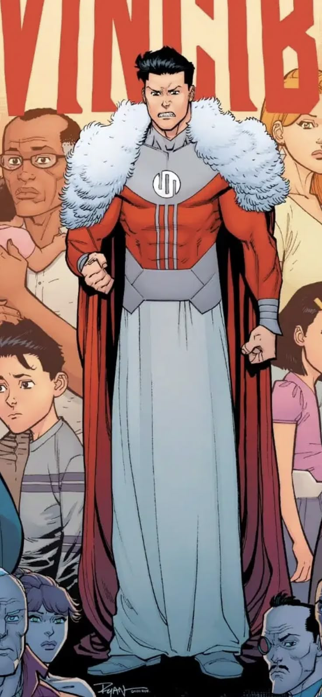

Mark Grayson envejece y cambia con el tiempo
A diferencia de muchos héroes de cómic que parecen atrapados en una burbuja de tiempo, Mark Grayson envejece, madura y evoluciona. Desde sus primeros días como adolescente hasta su vida adulta, cada etapa deja huellas profundas tanto en su personalidad como en su cuerpo.
Este crecimiento es una de las características más valiosas de Invincible. El lector puede ver cómo Mark pasa de ser un joven idealista a alguien marcado por la guerra, la traición y las decisiones difíciles. El personaje aprende, se equivoca, y cambia con el tiempo, lo cual lo hace más humano.
Ese sentido de progresión también se ve en su entorno: amigos que mueren, relaciones que terminan, enemigos que se transforman. En lugar de reiniciar constantemente el statu quo como hacen muchas franquicias, Kirkman permite que el tiempo avance y deje sus cicatrices. Eso hace que la historia se sienta viva.
← Volver a curiosidades de Invincible